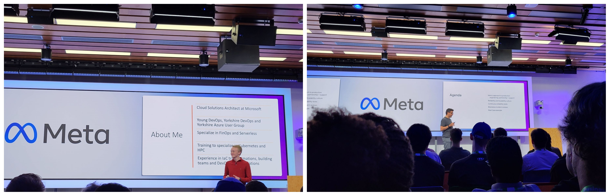

It was great attending the MLOps meetup.
Uroš Lipovšek talked about distributed training. More specifically, how to train large language models like GPT3 and Megatron efficiently with Kubernetes and slurm.
Paul Hetherington talked about building a platform for serverless interface on GPUs
just for information:
Distributed training is a method of training a machine learning model over a network of multiple machines. With distributed training, the data is partitioned across multiple machines, and the model is trained simultaneously on each machine, allowing for a larger training set and faster training times. Distributed training can be used to train large models, such as deep learning networks, that would otherwise require too much time or computing power for a single machine.
Overall, the experience was informative and helped me gain valuable insights into MLOps

1️⃣Aaron East (Lead Associate and Cloud Solutions Architect at Esynergy) talked on "A Developer's Guide to Migrating to the Cloud."
Explain why are we adopting cloud? He mentioned many reasons and with misconceptions.Consider the following valuable proportions of the cloud: usability, comparability, performance, elasticity, function stability, portability, maintenance, reliability, and security, whereas misconceptions include saving money and moving to cloud native working mode.
2️⃣Eric D. Schabell (Director Evangelism at Chronosphere.io) talked on "3 Pitfalls Everyone Should Avoid with Cloud Native Data."
Understanding the pitfalls around the collection, storage, and maintenance of your cloud data can mean the difference between bankruptcy and success with our cloud-native strategy. Learn about the data explosion that is a part of the large-scale cloud native world. Real customer experiences are used to highlight the three top lessons learned as their developers transitioned their data needs into cloud-native environments.
3️⃣Carlos Arilla (Technical Product Marketing Engineer at Giant Swarm) talked on "An Armful of Clusters."
ARM processors are disrupting the computer industry on many fronts. First they took the mobile industry, and now they are storming PCs and data centers. With an excellent performance per watt ratio and cheaper prices, they look like an excellent choice for sustainability and efficiency.

Jack Moore and Alex Dover organised this amazing event, which began with an introduction.
1️⃣Rodrigo Campos (Director of Engineering at Meta) spoke about "Building a Culture of Reliability." A culture of impeccability can be used to troubleshoot problems, and he shared with us many examples about the work culture.
2️⃣Ethan Sumner is a Cloud Solutions Architect at Microsoft, working with digital natives. As an example of how far you can go on a budget and how accessible DevOps is to everyone, regardless of the size of the business, he talked about how to develop a DevOps mentality and how to implement DevOps tools and principles in a SME or startup utilising open source, FinOps, and the cloud. Using prior experience managing a DevOps transformation for a SME on a tight budget with significant technical debt and resistive leadership, this session discussed first-hand knowledge of how effective adopting DevOps is.
3️⃣Priyavart Kaushik (Senior Solutions Architect at AWS) presented multi-tenant platform logging for Kubernetes clusters.Namespace isolation in Kubernetes allows for multi-tenant deployments that use the namespace as a tenant boundary. Multi-tenanted logging beyond Kubernetes' namespace isolation is crucial to helping SaaS platform admins and DevOps teams plan for logging at scale. Priyavart will showcase how to use Fluentbit and Amazon MSK (Kafka) to buffer logs and help with logging at scale and visualise these with Amazon OpenSearch.

This meetup was on the topic of "Building for Everyone." It was an event entirely focused on accessibility and inclusion in technology, with the mission to educate developers to incorporate accessibility best practises into their products and to raise awareness about accessibility guidelines and tools.
At the event, I learned how to develop products and applications that are more accessible and inclusive and how to use the accessibility testing tools available.
Emily Meng (Software Engineer, Maps JavaScript API at Google) how the Google Maps Platform approaches building accessibility into reusable components that get used by developers in many different ways.
Christopher Patnoe (Head of Accessibility and Disability at Google) discussed three principles about building inclusively, gave some examples from Google demonstrating them in products and services, and discussed the challenges that brings.

The 67th PyData London Meetup will take place on October 3, 2022.
1️⃣The presentation began with Peter Bleackley (a freelance data scientist and director at Playful Technology Limited) demonstrating an information theory-based keyword extraction algorithm (created by Montemurro and Zanette) analysing the text of "Alice's Adventures in Wonderland." The technique determines the difference in entropy between the actual and predicted frequency distributions of each word in the text, assuming that "significant" words (e.g., character names) contribute to the structure of a given document. The plotted distribution reveals the significance of the specific word in the text; non-significant terms will have a uniform distribution.
2️⃣Second, Paolo Tamagnini (Senior Data Scientist at KNIME) emphasised the necessity of low- or no-code solutions for ensuring efficient cooperation between a company's tech and non-tech departments. Programming libraries (Panda, Numpy, and Scikit-Learn) are often utilised by Python developers and data teams; but, when shared with internal stakeholders who are unfamiliar with Python, they struggle to obtain the desired answers from certain queries. Furthermore, the data wrangling, visualisation, and exploratory stages of the data science workflow take longer than predictive analytics or building AI or ML models. As a result, useful insights from data cannot be gained to tackle domain-specific challenges. KNIME, an open source analytics tool, overcomes this challenge by creating a draggable directed acyclical graph (DAG) interface.KNIME, an open source analytics platform, addresses this issue by creating a directed acyclical graph (DAG) interface that allows users to drag and drop library functions via colorful blocks to design data pipelines (workflows). These Python packages with little or no code can be packed together and disseminated inside the oorganizationor to the Python open-source community.
3️⃣Tambe Tabitha Achere (Data Analyst, Social Finance) created githooks and automated python formatting using the black formatter in VScode in git. Code formatting is critical for identifying between crucial code characteristics. Githooks are shell scripts that may be found in hidden.git/hooks directories and can be used to initiate actions in response to particular events.
4️⃣Bruce Pannaman (Director Engineering Management, ESG Book) gave a presentation on the NLP pipeline. To achieve real-time responsiveness, 24h news feeds were fed into hugging face models in NLP pipelines to update ESG scores for all firms. Each article was parsed using a pub-sub architecture coupled to an ML model. The system analysed 10000 articles every day, employing around 26 different ESG models.

This meetup was about engineering spacecraft data and best practises in data pipelines (October 2022).
The event began with an online conversation with Rui Pedro Santos (ESOC Software Engineer at the European Space Agency (ESA), who described the flow of space data from the spacecraft to the Space Link Extension (SLE) system via a space link and down to the Mission Control System (MCS) via SLE services.
Ruslan Fayzrakhmanov concluded the event by introducing the concept of entity resolution (ER)—the process of identifying different representations of the same real-world entities across databases where unique identifiers are not available (when SQL joins are not applicable).